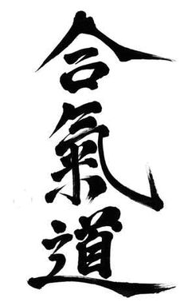

Aikido
About Aikido
Aikido is a Japanese Martial Art created during the 1920s by Morihei Ueshiba (1883-1969), an expert who reached the highest level of mastery in the classical Japanese Martial Arts. Aikido is performed by blending with the motion of the attacker and redirecting the force of the attack rather than opposing it head-on. Aikido has not competition. The goal of Aikido training is not perfection of a step or skill, but rather improving one's character according to the rules of nature.
Short History
Ueshiba developed aikido primarily during the late 1920s through the 1930s through the synthesis of the older martial arts that he had studied. The core martial art from which aikido derives is Daitō-ryū Aiki-jūjutsu, which Ueshiba studied directly with Takeda Sōkaku, the reviver of that art. Additionally, Ueshiba is known to have studied Tenjin Shin'yō-ryū with Tozawa Tokusaburō in Tokyo in 1901, Gotōha Yagyū Shingan-ryū under Nakai Masakatsu in Sakai from 1903 to 1908, and judo with Kiyoichi Takagi (高木 喜代市) (1894-1972) in Tanabe in 1911.
The art of Daitō-ryū is the primary technical influence on aikido. Along with empty-handed throwing and joint-locking techniques, Ueshiba incorporated training movements with weapons, such as those for the spear (yari), short staff (jō), and possibly the bayonet (銃剣, jūken). Aikido also derives much of its technical structure from the art of swordsmanship (kenjutsu).
Ueshiba moved to Hokkaidō in 1912, and began studying under Takeda Sokaku in 1915; His official association with Daitō-ryū continued until 1937. However, during the latter part of that period, Ueshiba had already begun to distance himself from Takeda and the Daitō-ryū. At that time Ueshiba referred to his martial art as "Aiki Budō". It is unclear exactly when Ueshiba began using the name "aikido", but it became the official name of the art in 1942 when the Greater Japan Martial Virtue Society (Dai Nippon Butoku Kai) was engaged in a government sponsored reorganization and centralization of Japanese martial arts.
Features of Aikido
Aikido training is intended to promote physical and mental training, according to the proficiency level of each skill and repeatedly practice so anyone can practice. Aikido training is not only good for health, but also develops self-confidence naturally for daily life. The dojo is a ideal place to deepen the understanding of the human eye, to meet people regardless of age, sex and occupation.